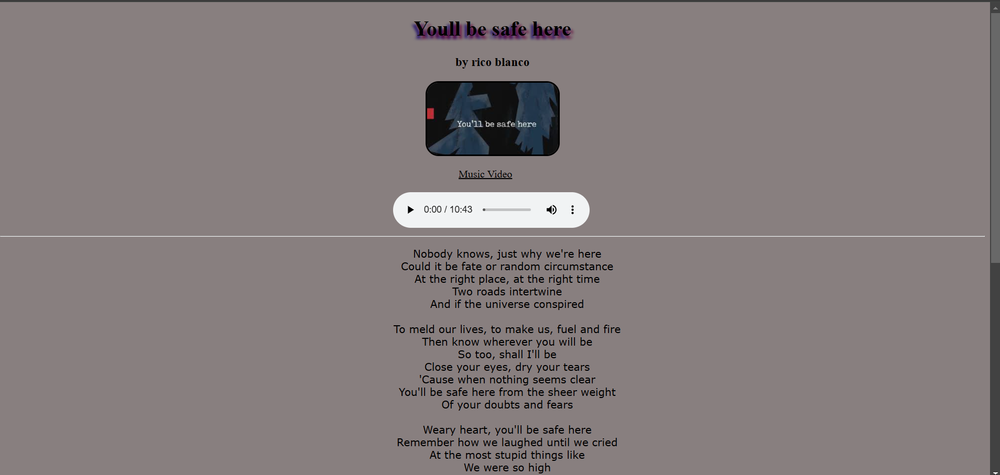
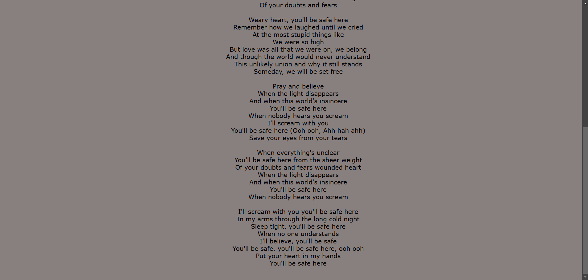
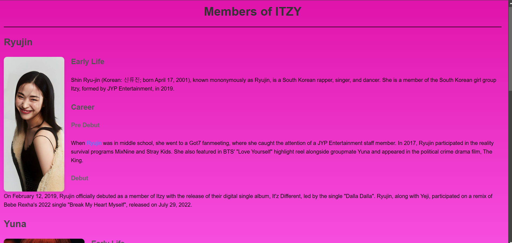
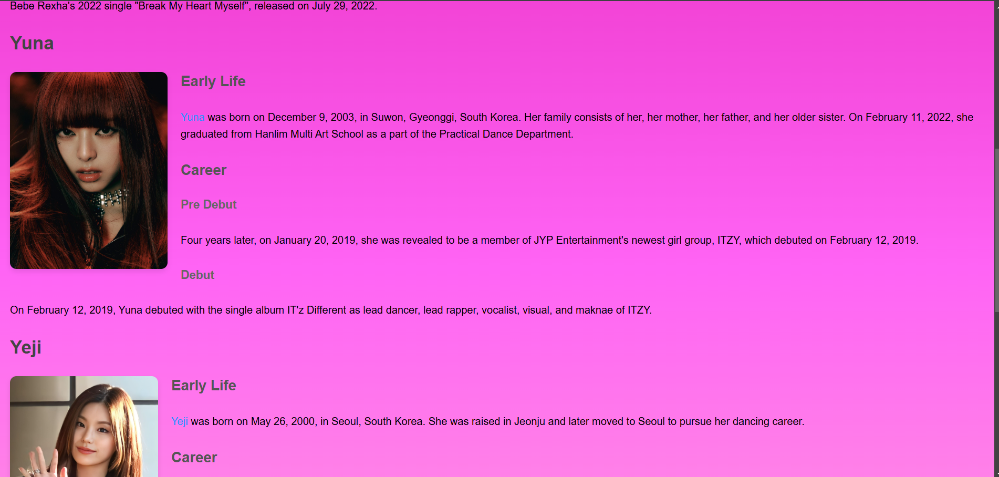
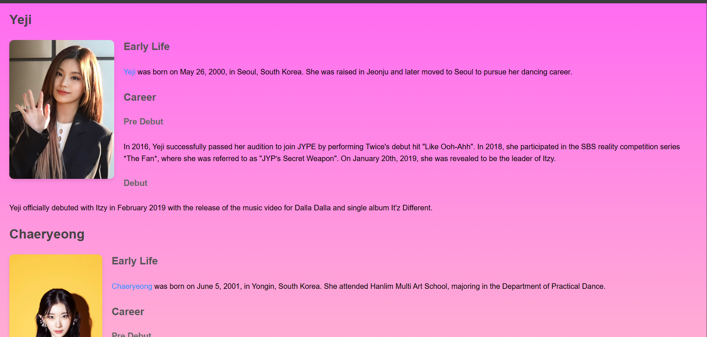
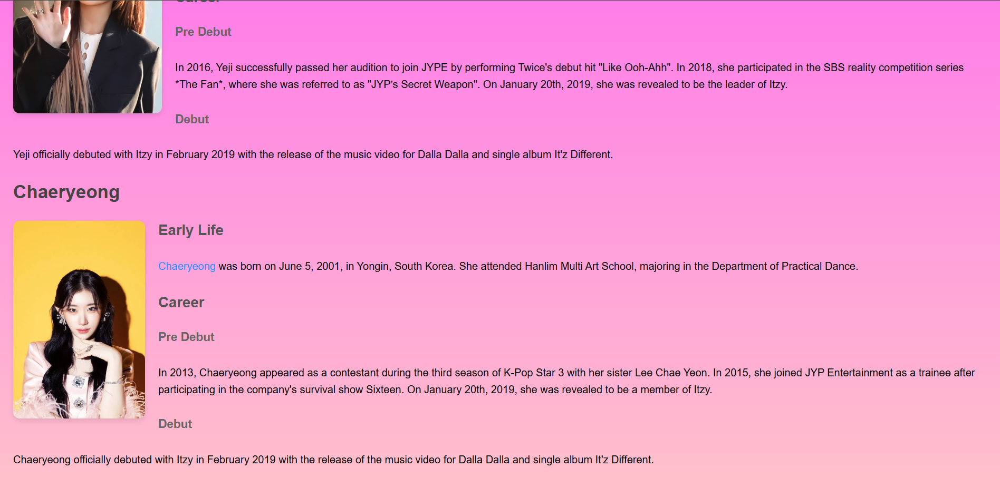
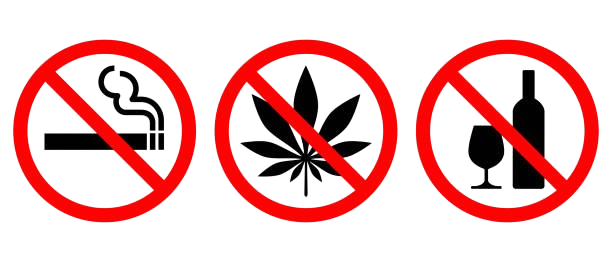

Brylle Adrian D. Benjamin
Bachelor of Science in Information Technology
I specialize in creating visually engaging, responsive, and user-friendly websites. With a strong foundation in HTML, CSS, JavaScript, and modern web development frameworks, I bring both creativity and technical expertise to every project. Whether it’s building custom websites from scratch or optimizing existing ones, my goal is always to deliver high-quality solutions that enhance the user experience. Explore my portfolio to see how I can help bring your ideas to life on the web!
Web Development
Personal Skills
This code creates a simple, aesthetically styled webpage that features the lyrics of the song "You'll Be Safe Here" by Rico Blanco. It includes various elements such as text, an image, a music link, and an audio player to provide users with a multimedia experience.
 This code creates a webpage dedicated to the members of the South Korean girl group ITZY. The page provides a brief overview of each member, featuring their early lives, career milestones, and debut with the group. The information is complemented by images and external links for further details.
   Logical thinking is essential for analyzing complex health data, creating effective healthcare policies, and developing innovative solutions to address public health issues like disease prevention and treatment. For example, logically assessing healthcare infrastructure can guide better resource allocation.
Problem-solving skills are critical for tackling global health challenges such as reducing maternal and child mortality, combating communicable diseases, and ensuring access to affordable healthcare. Identifying and implementing practical, sustainable solutions can drive progress toward achieving SDG 3 goals.
Critical thinking allows for evaluating existing health initiatives, identifying gaps, and making evidence-based improvements. It plays a key role in understanding the root causes of health disparities and designing targeted interventions for underserved populations..
Creativity fosters innovative approaches to health promotion and well-being. This can include developing engaging awareness campaigns, designing user-friendly health technologies, or creating new methods for delivering healthcare services in remote areas.
By leveraging these skills, individuals and organizations can contribute effectively to SDG 3 initiatives, fostering a healthier and more equitable world.Advocate for healthy lifestyles and preventive healthcare.
Support campaigns for affordable and accessible healthcare.
Raise awareness about issues such as mental health and substance abuse.